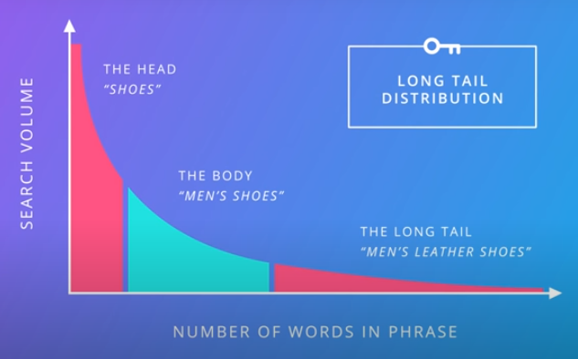
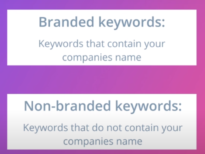
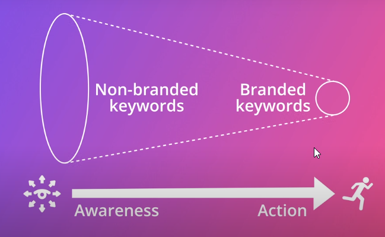

-->Content is king
-->Create a content strategy based around the terms your potential customers are using

Head keyword-->a popular keyword with large search volume, Head terms are often competitve to rank for in search results
Tail keyword-->a unique or less popular set of keywords that tend to be longer and have lower search volume, tail terms are often less competitive to rank for in the search results
-->The body and the long tail keywords are more often to go with
---------------------------------------------------------




-------------------------------------------------------------
steps:
1-finding a initial of keywords for your product, service, or offering
2-Evaluating and focusing keyword list
-->It’s often a better strategy to target a slightly less popular but more specific keyword for which there is less competition.